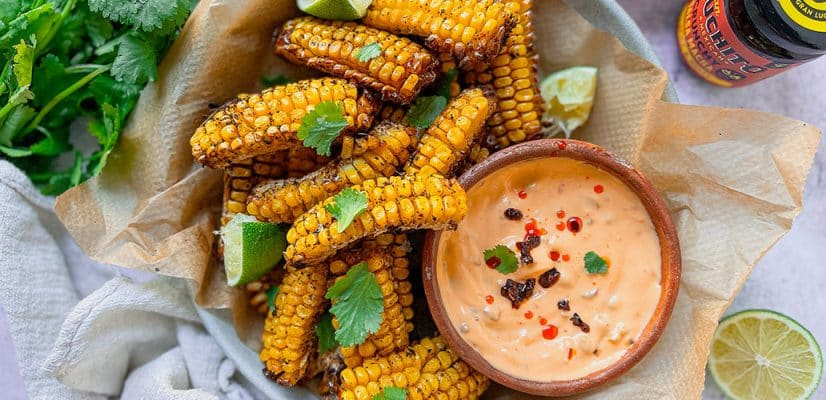

Cornribs

Description
This technique for making corn ribs will make you forget everything you know about eating corn on the cob—and will, without a doubt, become your favorite way of making corn.
ingredients
- 2 teaspoons kosher salt
- 1 teaspoon chili powder
- 1 teaspoon smoked paprika
- 1/2 teaspoon freshly ground black pepper
- 1/4 teaspoon ground cumin
- 1/4 teaspoon garlic powder
- 4 ears fresh corn, shucked
steps
- Stir together salt, chili powder, smoked paprika, black pepper, cumin, garlic powde
- trim off both ends of each ear of corn to expose the cob. Stand cob on end, and carefully cut corn in half down
- Drizzle oil over corn; sprinkle on about 2/3 of spice mixture
- Ribs can now be finished on a charcoal grill, until hot and well browned.
- To finish indoors, preheat the ovens broiler and set a rack 7 to 8 inches from the heating element. Line a baking pan with foil.
- Arrange corn ribs on the prepared pan with the maximum number of kernels facing up, toward the heat.
- Broil on High until corn starts to brown in spots, about 7 minutes.
- Remove and brush with melted butter; season to taste with remaining spice mixture.